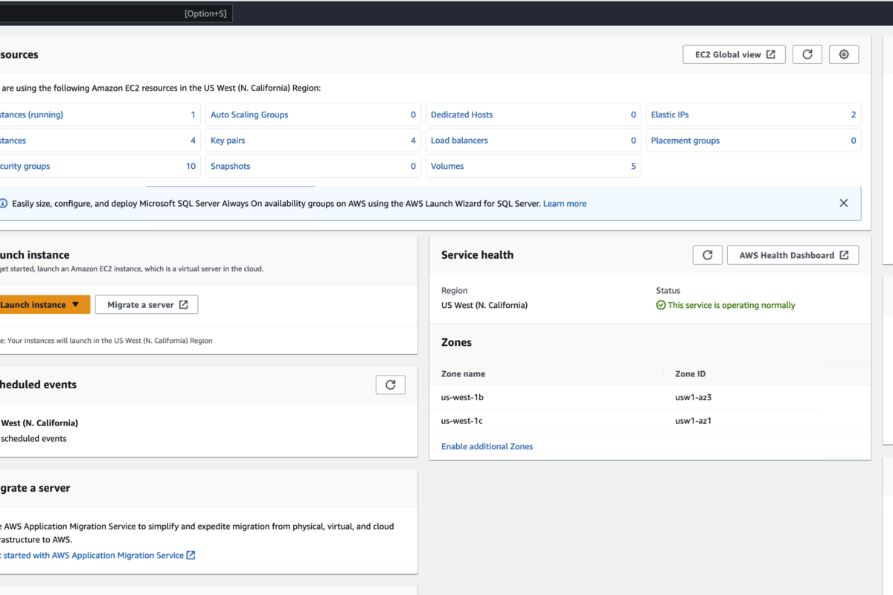
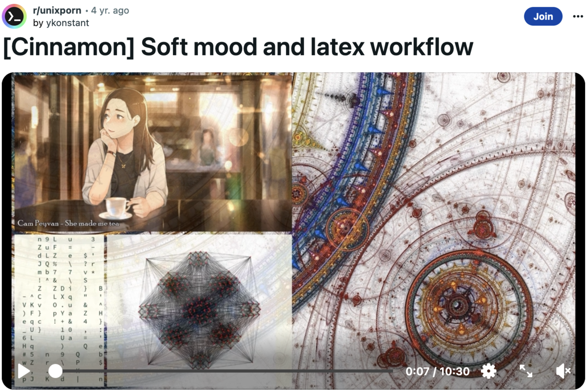

Running ZZedc Independently for Clinical Research Data Management
Investigator-controlled electronic data capture returns data ownership to the research team.
Introduction
I did not really know how achievable investigator independence in clinical data management was until I deployed ZZedc on a personal AWS instance and ran a pilot study without vendor involvement. For years, my research programs depended on commercial EDC systems with annual licensing fees, proprietary data formats, and vendor-controlled infrastructure. When a vendor relationship deteriorated, the estimated cost of migration reached $20,000.
The experience taught me that the barriers to investigator-managed EDC are not primarily technical. ZZedc installs in minutes, runs on standard infrastructure, and stores data in portable SQLite databases. The barriers are organizational: convincing the research team and institution that they can manage the infrastructure, security, and maintenance that vendors normally handle.
We examine ZZedc as an open-source EDC system designed for investigator-controlled deployment. It presents three deployment paths (solo researcher, team research, enterprise), evaluates the technical architecture, and provides step-by-step guides for each scenario. The assessment is honest about both the advantages and the significant responsibilities that come with managing one’s own clinical data infrastructure.
More formally, this post documents the convergence of the Cloud and Applications layers of the Workflow Construct described in A Workflow Construct for the Modern Data Scientist, specifically running ZZedc as a Shiny application on EC2 with an independently provisioned database. This is the construct’s worked example for hosting a researcher-facing clinical data tool end-to-end on the construct’s own cloud infrastructure, rather than depending on a third-party managed service.
Motivations
- My research program was paying $40,000 per year in EDC licensing for a system that restricted customization and locked data in a proprietary format.
- A vendor relationship deteriorated, and the estimated cost of data migration was $20,000 for data the research team had collected.
- I wanted to integrate EDC data directly with my R analysis pipelines, but the commercial system’s export format required manual reformatting.
- Multi-site collaborators needed web-accessible data entry, but each site’s IT department had different policies about vendor-managed systems.
- I was curious whether the R/Shiny ecosystem was mature enough to support a production EDC application with proper security and compliance features.
Objectives
- Evaluate ZZedc’s technical architecture and deployment options for investigator-controlled clinical data management.
- Present three deployment paths (solo researcher, team research, enterprise) with realistic cost and staffing estimates.
- Provide step-by-step deployment guides for local laptop and AWS server installations.
- Honestly assess the tradeoffs between investigator-managed and vendor-managed EDC systems, including the hidden costs of self-management.
This learning process is documented here. Errors spotted or better approaches are always welcome.

Investigator independence requires accepting responsibility for infrastructure that vendors normally manage.
Prerequisites and Setup
To deploy ZZedc, one will need one of the following depending on the chosen deployment path:
Solo researcher (local):
- R (4.0 or later)
- The
zzedcR package
Team research (AWS):
- AWS account with CLI configured
- Docker
- A registered domain name (for HTTPS)
- Basic command-line familiarity
Background assumed: Familiarity with clinical research data management concepts (data entry, validation, audit trails). No prior experience with AWS, Docker, or R/Shiny deployment is required for the solo researcher path.
What is Investigator-Controlled EDC?
Investigator-controlled EDC means that the research team, rather than a vendor, manages the electronic data capture infrastructure. The team controls where data is stored, how it is accessed, and what happens to it at the end of the study. This contrasts with vendor-managed systems where data resides on vendor infrastructure under vendor terms.
Think of it as the difference between renting and owning. With a vendor-managed system, one rents access to a data management platform: it is maintained by the vendor, but the research team does not control the infrastructure, and data is stored according to the vendor’s policies. With investigator-managed EDC, the team owns the infrastructure, controls every aspect, and bears responsibility for maintenance, security, and upkeep.
The decision between these approaches is not primarily technical. It depends on the team’s technical capacity, institutional compliance requirements, and the balance between licensing costs and staff time for self-management.
Getting Started
Comparing EDC Approaches
| Approach | Strengths | Tradeoffs |
|---|---|---|
| Commercial EDC | Polished UI, vendor support | Licensing costs, vendor lock-in |
| Spreadsheets | Low cost, familiar | Poor validation, no audit trail |
| Custom R/Shiny | Maximum flexibility | Ongoing development required |
| Open-source EDC | Standard formats, lower cost | Requires technical setup |
ZZedc Architecture
+-------------------------------------------+
| Your Infrastructure (AWS, Local, Hybrid) |
| |
| +--------------------------------------+ |
| | Web Browser (Any Location) | |
| | https://trial.example.org | |
| +--------------------------------------+ |
| | HTTPS (Automatic) |
| +--------------------------------------+ |
| | Caddy Reverse Proxy | |
| | (Automatic Let's Encrypt) | |
| +--------------------------------------+ |
| | Reverse Proxy |
| +--------------------------------------+ |
| | ZZedc R/Shiny Application | |
| | (Auth, Forms, Reporting) | |
| +--------------------------------------+ |
| | Database |
| +--------------------------------------+ |
| | SQLite Database (Standard Format) | |
| | Your Data, Your Control | |
| +--------------------------------------+ |
| |
+-------------------------------------------+Key design points:
- All infrastructure is standard: Docker containers, standard web server (Caddy), open-source database (SQLite).
- No proprietary components: the system uses only open-source software.
- Transparent processes: source code is available for review and modification.
- Portable data: SQLite databases can be accessed with any SQL tool.
What ZZedc Includes
- Electronic data capture with real-time validation: Enter study data with immediate field-level validation.
- Role-based access control: Five built-in roles (Admin, PI, Coordinator, Data Manager, Monitor) with configurable permissions.
- Reporting: Enrollment reports, quality control summaries, and statistical overviews.
- Data quality framework: Automated checks for missing data, outliers, and consistency.
- Audit trail: Every action is logged with user, timestamp, and change history.
- Data export: CSV, Excel, SPSS, and R formats supported.

Standard components and portable data formats enable investigator independence.
Deployment Paths
Path 1: Solo Researcher (Local Laptop)
Best for: Individual investigators, small pilot studies, initial prototyping.
Install on a personal laptop in ten minutes:
install.packages("zzedc")
library(zzedc)
zzedc::init()
launch_zzedc()Data lives in a local SQLite file (data/zzedc.db). You are the only user. Back up by copying the file to cloud storage.
Direct infrastructure cost: Free (only local laptop electricity).
Staff time: Minimal (run as needed).
Path 2: Team Research (Single AWS Server)
Best for: Research teams at a single institution or collaborative multi-site trials.
Deploy on AWS EC2 in approximately 15 minutes:
./aws_setup.sh \
--region us-west-2 \
--study-name "Depression Treatment Trial" \
--study-id "DEPR-2025-001" \
--admin-password "SecurePass123!" \
--domain trial.example.org \
--instance-type t3.mediumMultiple team members access via HTTPS. Database backed up automatically.
Direct infrastructure cost: Approximately $30-50/month for EC2 instance.
Staff time: Basic maintenance (Docker handles updates, Caddy handles HTTPS renewal).
Path 3: Enterprise / Multi-Site
Best for: Large NIH-funded studies, pharmaceutical trials, production deployments.
Deploy across multiple AWS availability zones with load balancing, RDS database, S3 backup, and CloudWatch monitoring.
Direct infrastructure cost: $200-500/month depending on data volume.
Staff time: Automated (infrastructure-as-code, CI/CD pipeline).
Deployment Scenarios
Scenario 1: Solo Researcher Prototype
Dr. Jane is a clinical psychologist planning a small depression treatment study. She wants to test intervention feasibility before seeking NIH funding.
install.packages("zzedc")
library(zzedc)
zzedc::init()
launch_zzedc()Jane has a secure, validated EDC system running locally. She can create forms for baseline, weekly, and endpoint visits; enroll patients and enter data; generate enrollment reports; export data to Excel for analysis; and back up by copying a single file to Dropbox.
Direct infrastructure cost: $0.
Indirect costs: Staff time for system administration, backup management, security updates (estimated 2-4 hours/month for solo study).
Scenario 2: Multi-Site Trial Migration
The ADHD research consortium at 5 universities currently uses an expensive commercial EDC that costs $40,000/year and is inflexible. They want to migrate to something more affordable and customizable.
./aws_setup.sh \
--region us-west-2 \
--study-name "Multisite ADHD Trial" \
--study-id "ADHD-MULTI-2025" \
--admin-password "SecurePassword123!" \
--domain adhd-trial.org \
--instance-type t3.largeA single centralized instance accessible from all 5 sites with HTTPS and automatic security certificates. Role-based access: 2 administrators, 5 principal investigators, 20 coordinators, 5 data managers.
Direct infrastructure cost: Approximately $40-80/month (AWS EC2 instance + storage).
Indirect costs: Staff time for deployment (20-40 hours initial setup), ongoing administration and monitoring (5-10 hours/month).
Scenario 3: Individual Investigator Independence
Dr. Robert was running a study with a Biostatistics Lab that managed his EDC. The lab relationship deteriorated due to cost escalation and support issues. He wants to take control.
- Deploy ZZedc independently on AWS.
- Migrate data from the old system (CSV export, import into ZZedc).
- Complete the study independently.
- Archive data in standard SQLite format to institutional repository.
Result: Dr. Robert owns his data and system. If he works with another Biostatistics Lab in the future, he can do so without vendor lock-in.
Security and Compliance
ZZedc includes several security features relevant to regulatory compliance. Users remain responsible for validating that implementations meet their institutional requirements.
Data governance features:
- User access logging with timestamps and action records.
- Role-based access control with granular permission assignment.
- Data export capabilities supporting data subject access requests.
- Password encryption and session management.
Technical security:
- HTTPS support with automatic certificate management via Let’s Encrypt.
- Database encryption options.
- Session timeout controls to prevent unauthorized access.
Important note: Regulatory compliance (GDPR, 21 CFR Part 11) depends on implementation context, institutional policies, and validation within the specific regulatory environment. Coordination with institutional compliance and IT teams is essential.
Comparison Table
| Feature | ZZedc | REDCap | Medidata |
|---|---|---|---|
| Infrastructure | ~$40-500/mo | $200-1000/mo | $500-2000/mo |
| Staff time | Required | Minimal | Minimal |
| Data format | SQLite | Proprietary | Proprietary |
| Customization | Full source | Limited | Limited |
| Support | Community | Commercial | Commercial |
| Data control | Local | Vendor | Vendor |
| Learning curve | Moderate | Low | Low |
Things to Watch Out For
- Infrastructure management is real work. The licensing savings from self-managed EDC are offset by staff time for deployment, updates, security patching, and troubleshooting. Budget 5-10 hours per month for ongoing administration.
- Regulatory compliance is the investigator’s responsibility. Commercial vendors provide compliance frameworks; with self-managed EDC, the team must validate compliance with institutional and regulatory requirements.
- SQLite has concurrency limitations. For studies with many simultaneous data entry users, SQLite’s single-writer constraint may cause performance issues. The enterprise path addresses this with PostgreSQL.
- Domain and DNS configuration adds complexity. The AWS deployment requires a registered domain and DNS configuration, which involves coordination with domain registrars and propagation delays.
- Backup verification is essential. Automated backups are only useful if they are regularly verified to restore correctly. Quarterly restore tests are warranted.
Long-term sustainability requires planning for maintenance, updates, and eventual data archival.
Lessons Learned
Conceptual Understanding
- The barriers to investigator-managed EDC are primarily organizational, not technical. ZZedc installs and runs with minimal technical effort; the challenge is accepting responsibility for infrastructure.
- Total cost of ownership includes both infrastructure costs and staff time. The financial comparison with vendor-managed systems depends on local staff costs versus vendor licensing.
- Data portability is a more valuable feature than it appears initially. When a vendor relationship ends, portable data formats (SQLite, CSV) prevent costly migration projects.
- Open-source EDC requires a different support model: community forums and documentation replace vendor helpdesks.
Technical Skills
- The ZZedc
init()function generates a project-specific configuration through interactive prompts, requiring no prior R/Shiny deployment experience. - The
aws_setup.shscript automates EC2 instance creation, Docker deployment, and Caddy HTTPS configuration. - SQLite databases can be queried directly from R using the
RSQLitepackage, enabling tight integration between data capture and analysis. - Caddy’s automatic Let’s Encrypt integration eliminates the complexity of manual HTTPS certificate management.
Gotchas and Pitfalls
- The first deployment takes longer than the documented estimates because of DNS propagation delays and AWS account setup.
- SQLite’s single-writer limitation is not apparent in testing but surfaces under production load with multiple simultaneous users.
- Institutional IT departments may resist investigator-managed infrastructure; engage them early in the planning process.
- Security patching is an ongoing responsibility that is easy to neglect; schedule monthly maintenance windows.
Limitations
- ZZedc requires technical staff for deployment and maintenance. Programs without IT support capacity should consider vendor-managed alternatives.
- The comparison with commercial systems (REDCap, Medidata) is incomplete because it does not account for the value of vendor-provided training, documentation, and support.
- SQLite is appropriate for small to medium studies but may not scale to large multi-site trials with hundreds of concurrent users.
- Regulatory compliance validation must be performed independently for each implementation context; ZZedc does not provide pre-validated compliance frameworks.
- This post evaluates a single open-source EDC system; alternatives such as OpenClinica deserve independent evaluation.
- The author has involvement with ZZedc development, which shapes the perspective presented here.
Opportunities for Improvement
- Develop a comprehensive compliance validation framework that maps ZZedc features to 21 CFR Part 11 and GDPR requirements.
- Create a migration toolkit that automates data import from REDCap, Medidata, and CSV sources.
- Build a monitoring dashboard that alerts administrators to security issues, backup failures, and performance degradation.
- Implement PostgreSQL support for the enterprise deployment path to address SQLite’s concurrency limitations.
- Develop institutional deployment guides that address common IT department concerns about investigator-managed infrastructure.
- Create a cost comparison calculator that accounts for both licensing and staff time across different EDC approaches.
Wrapping Up
Running ZZedc independently for clinical research data management is technically achievable and financially attractive for programs with the technical capacity to manage their own infrastructure. The system installs quickly, stores data in portable formats, and provides the core features that clinical research requires (data entry, validation, audit trails, and role-based access).
What this evaluation made clear is that the decision between investigator-managed and vendor-managed EDC is not about technology. It is about organizational capacity. Programs with staff who can manage AWS instances, apply security patches, and verify backups have a strong financial case for self-managed EDC. Where that capacity is absent, the hidden costs of self-management may exceed the visible costs of vendor licensing.
Investigators interested in this approach are encouraged to start with the solo researcher path: deploy ZZedc on a laptop, create a small pilot study, and evaluate whether the system meets program needs before committing to AWS deployment. The migration path from local to cloud is straightforward.
In conclusion, four points merit emphasis. First, ZZedc provides investigator-controlled EDC with standard data formats (SQLite, CSV) and fully open-source code, eliminating proprietary lock-in. Second, three deployment paths serve different scales: solo researcher (local laptop, free), team research (single AWS server, approximately $40-80 per month), and enterprise (multi-zone AWS, $200-500 per month). Third, total cost of ownership must account for both direct infrastructure costs and staff time for deployment, maintenance, and security patching. Fourth, starting with a local pilot before committing to cloud deployment is the recommended strategy, as the migration path is straightforward and the local path has essentially no infrastructure cost.
See Also
Related posts:
- Testing Data Analysis Workflows: Testing strategies for research pipelines
Key resources:
- ZZedc GitHub: Source code and documentation
- ZZedc Deployment Guide: AWS and Docker deployment instructions
- REDCap: The most widely used academic EDC system
- 21 CFR Part 11 Guidance: FDA electronic records regulation
Reproducibility
ZZedc is an R package available on GitHub. To install and evaluate:
install.packages("zzedc")
library(zzedc)
zzedc::init()
launch_zzedc()For AWS deployment:
git clone https://github.com/rgt47/zzedc.git
cd zzedc/deployment
chmod +x aws_setup.sh
./aws_setup.sh --helpProject files:
zzedcindependence/
analysis/report/index.qmd (this post)
analysis/media/images/ (hero, ambiance)Let’s Connect
- GitHub: rgt47
- Twitter/X: @rgt47
- LinkedIn: Ronald Glenn Thomas
- Email: rgtlab.org/contact
I would enjoy hearing from readers who:
- Spot an error or a better approach to any of the code in this post.
- Have suggestions for topics to cover.
- Want to discuss R programming, data science, or reproducible research.
- Have questions about anything in this tutorial.
- Simply want to say hello and connect.